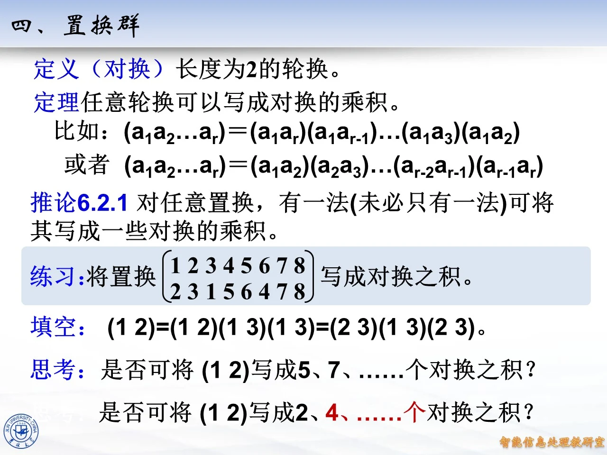
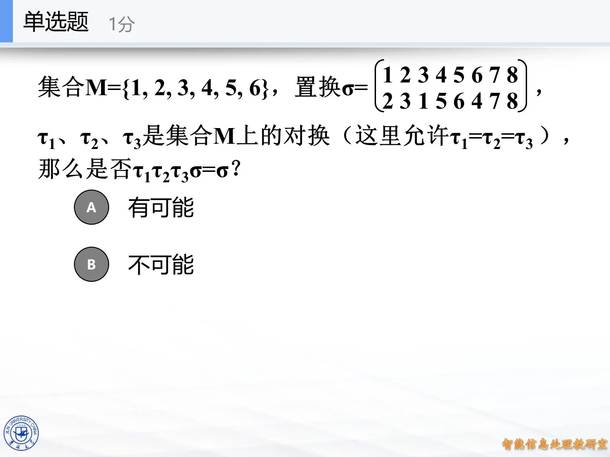
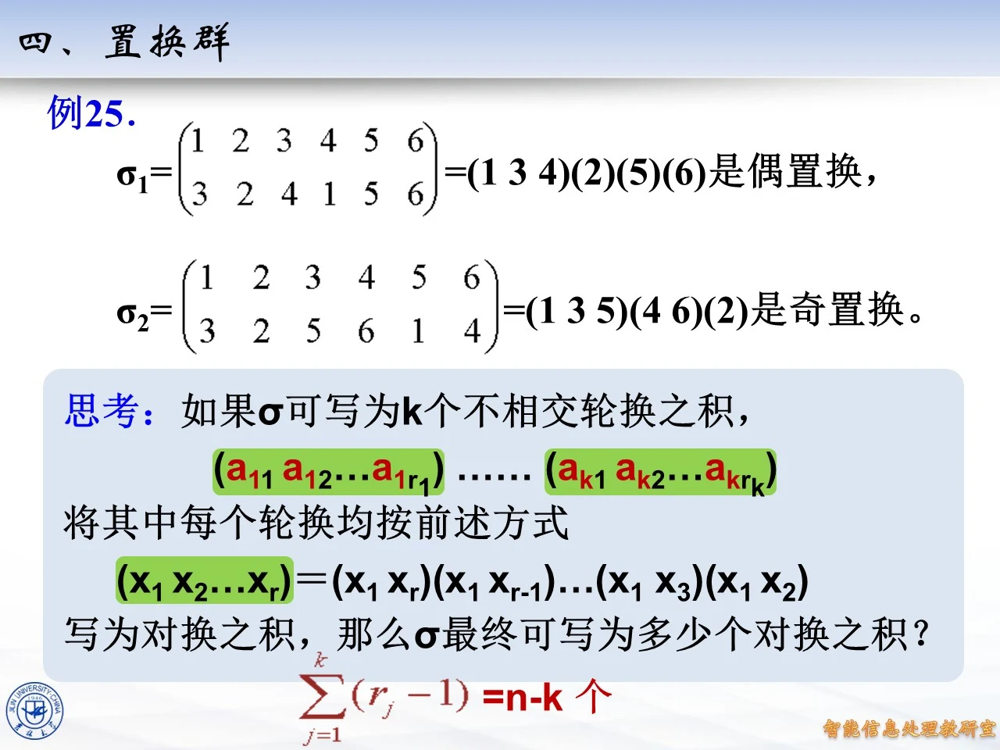

本讲解覆盖课件「四、置换群」中关于对换、置换奇偶性与交错群的完整内容（第二来源 p.189-286 全段、主来源 p.1-93 全段）。这段内容在章内承接前一小节的轮换记号：先把任意轮换拆成对换（长度为 2 的轮换）的乘积，再据此给每个置换定义奇偶性（定性数），证明奇偶性不随分解方式改变，最后得到乘法规律并引出 n 次交代群。课件由两个来源收录（一册按页码 189–286 编号，一册按 1–93 编号），两处幻灯片内容基本相同，讲解以编号 1–93 的完整讲座为主线逐页展开，编号 189–286 中的对应页面在每个页块内一并列出；其中只有「例 24」是编号 189–286 来源独有的例题，单独设节细讲。

课件原图 · 第八章-2-原版 (1) · 第 209 页 查看前后已收录原页 → 对换与轮换的对换分解
◆ p.1 （第二来源 p.189）
本页为 §6.2「群的定义」之四「置换群」部分的开篇过渡页，只有章节标题与装饰图案，无实质内容（p.1 为过渡页）。
◆ p.2-7 （第二来源 p.189-194）｜定义（对换）与轮换拆对换的定理
课件给出定义与定理：
定义（对换）：长度为 2 的轮换，即形如 ( a b ) (a\ b) ( a b ) a a a b b b b b b a a a
定理：任意轮换可以写成对换的乘积。
课件逐步展开公式（p.3 起显示完整式子，第二来源 p.192-194 帧同步展示）：
( a 1 a 2 … a r ) = ( a 1 a r ) ( a 1 a r − 1 ) … ( a 1 a 3 ) ( a 1 a 2 ) (a_1\,a_2\ldots a_r)=(a_1\,a_r)(a_1\,a_{r-1})\ldots(a_1\,a_3)(a_1\,a_2) ( a 1 a 2 … a r ) = ( a 1 a r ) ( a 1 a r − 1 ) … ( a 1 a 3 ) ( a 1 a 2 )
验证这个式子为什么成立（置换乘法按从右向左的顺序作用）：任取 a i a_i a i i < r i<r i < r a i a_i a i ( a 1 a 2 ) (a_1\,a_2) ( a 1 a 2 ) a 1 a_1 a 1 i = 1 i=1 i = 1 a 1 a_1 a 1 a 2 a_2 a 2 ( a 1 a j ) (a_1\,a_{j}) ( a 1 a j ) a 1 a_1 a 1 a i a_i a i i ≥ 2 i\ge 2 i ≥ 2 a 1 a_1 a 1 ( a 1 a i ) (a_1\,a_{i}) ( a 1 a i ) a i a_i a i ( a 1 a j ) (a_1\,a_j) ( a 1 a j ) j ≠ i j\ne i j = i a i a_i a i a i a_i a i a i + 1 a_i+1 a i + 1 a i ↦ a i + 1 a_i\mapsto a_{i+1} a i ↦ a i + 1 a r a_r a r ( a 1 a r ) (a_1\,a_r) ( a 1 a r ) a 1 a_1 a 1 a 1 ↦ a 2 ↦ ⋯ ↦ a r ↦ a 1 a_1\mapsto a_2\mapsto\cdots\mapsto a_r\mapsto a_1 a 1 ↦ a 2 ↦ ⋯ ↦ a r ↦ a 1 r r r r − 1 r-1 r − 1
◆ p.8 （第二来源 p.195）｜第二种拆法
课件又给出另一种拆法（此处帧上公式尚未显示完整，完整式子见下一页块）：
( a 1 a 2 … a r ) = ( a 1 a 2 ) ( a 2 a 3 ) … ( a r − 2 a r − 1 ) ( a r − 1 a r ) (a_1\,a_2\ldots a_r)=(a_1\,a_2)(a_2\,a_3)\ldots(a_{r-2}\,a_{r-1})(a_{r-1}\,a_r) ( a 1 a 2 … a r ) = ( a 1 a 2 ) ( a 2 a 3 ) … ( a r − 2 a r − 1 ) ( a r − 1 a r )
同样是 r − 1 r-1 r − 1 a i a_i a i 1 < i < r 1<i<r 1 < i < r ( a i − 1 a i ) (a_{i-1}\,a_i) ( a i − 1 a i ) ( a i a i + 1 ) (a_i\,a_{i+1}) ( a i a i + 1 ) ( a i a i + 1 ) (a_i\,a_{i+1}) ( a i a i + 1 ) a i + 1 a_{i+1} a i + 1 a i + 1 a_{i+1} a i + 1 a i ↦ a i + 1 a_i\mapsto a_{i+1} a i ↦ a i + 1 a 1 a_1 a 1 ( a 1 a 2 ) (a_1\,a_2) ( a 1 a 2 ) a 2 a_2 a 2 a r a_r a r ( a r − 1 a r ) , ( a r − 2 a r − 1 ) , … (a_{r-1}\,a_r),(a_{r-2}\,a_{r-1}),\ldots ( a r − 1 a r ) , ( a r − 2 a r − 1 ) , … a 1 a_1 a 1
◆ p.9-14 （第二来源 p.196-206）｜推论 6.2.1 与练习：八元置换拆对换
推论 6.2.1：对任意置换，有一法（未必只有一法）可将其写成一些对换的乘积。理由：任何置换都可写成不相交轮换之积，而每个轮换又可按上面两个公式拆成对换，把各轮换的对换连写即可。
练习：将置换 ( 1 2 3 4 5 6 7 8 2 3 1 5 6 4 7 8 ) \begin{pmatrix}1&2&3&4&5&6&7&8\\2&3&1&5&6&4&7&8\end{pmatrix} ( 1 2 2 3 3 1 4 5 5 6 6 4 7 7 8 8 )
思路：先写成不相交轮换。1 到 2、2 到 3、3 到 1，得 ( 1 2 3 ) (1\ 2\ 3) ( 1 2 3 ) ( 4 5 6 ) (4\ 5\ 6) ( 4 5 6 )
σ = ( 1 2 3 ) ( 4 5 6 ) ( 7 ) ( 8 ) \sigma=(1\ 2\ 3)(4\ 5\ 6)(7)(8) σ = ( 1 2 3 ) ( 4 5 6 ) ( 7 ) ( 8 )
再用第一种拆法把每个轮换拆开：( 1 2 3 ) = ( 1 3 ) ( 1 2 ) (1\ 2\ 3)=(1\ 3)(1\ 2) ( 1 2 3 ) = ( 1 3 ) ( 1 2 ) ( 4 5 6 ) = ( 4 6 ) ( 4 5 ) (4\ 5\ 6)=(4\ 6)(4\ 5) ( 4 5 6 ) = ( 4 6 ) ( 4 5 )
σ = ( 1 3 ) ( 1 2 ) ( 4 6 ) ( 4 5 ) \sigma=(1\ 3)(1\ 2)(4\ 6)(4\ 5) σ = ( 1 3 ) ( 1 2 ) ( 4 6 ) ( 4 5 )
共 4 个对换（python 复算确认 ( 1 3 ) ( 1 2 ) ( 4 6 ) ( 4 5 ) (1\ 3)(1\ 2)(4\ 6)(4\ 5) ( 1 3 ) ( 1 2 ) ( 4 6 ) ( 4 5 ) 2 , 3 , 1 , 5 , 6 , 4 , 7 , 8 2,3,1,5,6,4,7,8 2 , 3 , 1 , 5 , 6 , 4 , 7 , 8
◆ p.15-22 （第二来源 p.196-206 的后半段与 p.207-209）｜填空：( 1 2 ) (1\ 2) ( 1 2 )
课件填空（动画逐步给出）：
( 1 2 ) = ( 1 2 ) ( 1 3 ) ( 1 3 ) = ( 2 3 ) ( 1 3 ) ( 2 3 ) (1\ 2)=(1\ 2)(1\ 3)(1\ 3)=(2\ 3)(1\ 3)(2\ 3) ( 1 2 ) = ( 1 2 ) ( 1 3 ) ( 1 3 ) = ( 2 3 ) ( 1 3 ) ( 2 3 )
第一式直接在对换后面插入一对 ( 1 3 ) ( 1 3 ) (1\ 3)(1\ 3) ( 1 3 ) ( 1 3 ) ( 1 3 ) 2 (1\ 3)^2 ( 1 3 ) 2 ( 1 2 ) (1\ 2) ( 1 2 ) 1 1 1 ( 2 3 ) (2\ 3) ( 2 3 ) ( 1 3 ) (1\ 3) ( 1 3 ) 3 3 3 ( 2 3 ) (2\ 3) ( 2 3 ) 2 2 2 1 ↦ 2 1\mapsto 2 1 ↦ 2 2 2 2 ( 2 3 ) (2\ 3) ( 2 3 ) 3 3 3 ( 1 3 ) (1\ 3) ( 1 3 ) ( 2 3 ) (2\ 3) ( 2 3 ) 1 1 1 2 ↦ 1 2\mapsto 1 2 ↦ 1 3 3 3 ( 2 3 ) (2\ 3) ( 2 3 ) 2 2 2 ( 1 3 ) (1\ 3) ( 1 3 ) ( 2 3 ) (2\ 3) ( 2 3 ) 3 3 3 3 ↦ 3 3\mapsto 3 3 ↦ 3 ( 1 2 ) (1\ 2) ( 1 2 ) 1 ↔ 2 1\leftrightarrow 2 1 ↔ 2
课件接着提出思考（p.18-22，=p.205-209）：是否可将 ( 1 2 ) (1\ 2) ( 1 2 ) ( 1 2 ) (1\ 2) ( 1 2 )
解答：奇数个可以，偶数个不可以。写 5 个、7 个，只需在 3 个的基础上再插入成对的相同对换，例如
( 1 2 ) = ( 1 2 ) ( 1 3 ) ( 1 3 ) ( 1 3 ) ( 1 3 ) (1\ 2)=(1\ 2)(1\ 3)(1\ 3)(1\ 3)(1\ 3) ( 1 2 ) = ( 1 2 ) ( 1 3 ) ( 1 3 ) ( 1 3 ) ( 1 3 )
python 复算确认上式仍等于 ( 1 2 ) (1\ 2) ( 1 2 )
拓展 （课件外补充）：( a b ) ( a b ) (a\ b)(a\ b) ( a b ) ( a b )
三道单选题：左乘对换后还会等于原置换吗
◆ p.23-24 （第二来源 p.210-211）｜第一题
单选题：集合 M = { 1 , 2 , 3 , 4 , 5 , 6 } M=\{1,2,3,4,5,6\} M = { 1 , 2 , 3 , 4 , 5 , 6 } σ = ( 1 2 3 4 5 6 7 8 2 3 1 5 6 4 7 8 ) \sigma=\begin{pmatrix}1&2&3&4&5&6&7&8\\2&3&1&5&6&4&7&8\end{pmatrix} σ = ( 1 2 2 3 3 1 4 5 5 6 6 4 7 7 8 8 ) τ 1 , τ 2 \tau_1,\tau_2 τ 1 , τ 2 M M M τ 1 = τ 2 \tau_1=\tau_2 τ 1 = τ 2 τ 1 τ 2 σ = σ \tau_1\tau_2\sigma=\sigma τ 1 τ 2 σ = σ
注：课件页面本身有笔误——集合写成 6 元集，双行记号却含 7、8 两列。处理办法是把 σ \sigma σ { 1 , … , 8 } \{1,\ldots,8\} { 1 , … , 8 }
思路：若 τ 1 τ 2 σ = σ \tau_1\tau_2\sigma=\sigma τ 1 τ 2 σ = σ σ − 1 \sigma^{-1} σ − 1 τ 1 τ 2 σ σ − 1 = σ σ − 1 \tau_1\tau_2\sigma\sigma^{-1}=\sigma\sigma^{-1} τ 1 τ 2 σ σ − 1 = σ σ − 1 τ 1 τ 2 = I \tau_1\tau_2=I τ 1 τ 2 = I
答案：有可能。取 τ 1 = τ 2 = ( 1 2 ) \tau_1=\tau_2=(1\ 2) τ 1 = τ 2 = ( 1 2 ) ( 1 2 ) ( 1 2 ) = I (1\ 2)(1\ 2)=I ( 1 2 ) ( 1 2 ) = I ( 1 2 ) ( 1 2 ) σ = σ (1\ 2)(1\ 2)\sigma=\sigma ( 1 2 ) ( 1 2 ) σ = σ τ 1 = τ 2 \tau_1=\tau_2 τ 1 = τ 2
◆ p.25 （第二来源 p.212）｜第三题
单选题：τ 1 , τ 2 , τ 3 \tau_1,\tau_2,\tau_3 τ 1 , τ 2 , τ 3 τ 1 = τ 2 = τ 3 \tau_1=\tau_2=\tau_3 τ 1 = τ 2 = τ 3 τ 1 τ 2 τ 3 σ = σ \tau_1\tau_2\tau_3\sigma=\sigma τ 1 τ 2 τ 3 σ = σ
思路：同法右乘 σ − 1 \sigma^{-1} σ − 1 τ 1 τ 2 τ 3 = I \tau_1\tau_2\tau_3=I τ 1 τ 2 τ 3 = I
拓展 （课件外补充）：中间还有一问（两次授课的动画帧里出现过）：两个对换之积能否等于 I I I τ 1 ≠ τ 2 \tau_1\ne\tau_2 τ 1 = τ 2 τ 1 τ 2 = I \tau_1\tau_2=I τ 1 τ 2 = I τ 2 = τ 1 − 1 \tau_2=\tau_1^{-1} τ 2 = τ 1 − 1 τ 1 = τ 2 \tau_1=\tau_2 τ 1 = τ 2

课件原图 · 第八章-2-原版 (1) · 第 212 页 查看前后已收录原页 → 定义（奇置换、偶置换、定性数）与例 25
◆ p.26 （第二来源 p.213）｜定义 9.3.2
定义（信安教材中定义 9.3.2）：设 σ \sigma σ k k k k k k r 1 , r 2 , … , r k r_1,r_2,\ldots,r_k r 1 , r 2 , … , r k
∑ j = 1 k ( r j − 1 ) = n − k \sum_{j=1}^{k}(r_j-1)=n-k j = 1 ∑ k ( r j − 1 ) = n − k
为奇数（偶数），则称 σ \sigma σ n − k n-k n − k σ \sigma σ
几点说明：第一，长度为 1 的轮换（固定点）也要计入 k k k ∑ ( r j − 1 ) \sum(r_j-1) ∑ ( r j − 1 )
◆ p.27-35 （第二来源 p.214-222）｜例 25：判定两个六元置换的奇偶
例 25：判断下列两个置换的奇偶性。
σ 1 = ( 1 2 3 4 5 6 3 2 4 1 5 6 ) = ( 1 3 4 ) ( 2 ) ( 5 ) ( 6 ) 是偶置换 \sigma_1=\begin{pmatrix}1&2&3&4&5&6\\3&2&4&1&5&6\end{pmatrix}=(1\ 3\ 4)(2)(5)(6)\ \text{是偶置换} σ 1 = ( 1 3 2 2 3 4 4 1 5 5 6 6 ) = ( 1 3 4 ) ( 2 ) ( 5 ) ( 6 ) 是偶置换
σ 2 = ( 1 2 3 4 5 6 3 2 5 6 1 4 ) = ( 1 3 5 ) ( 4 6 ) ( 2 ) 是奇置换 \sigma_2=\begin{pmatrix}1&2&3&4&5&6\\3&2&5&6&1&4\end{pmatrix}=(1\ 3\ 5)(4\ 6)(2)\ \text{是奇置换} σ 2 = ( 1 3 2 2 3 5 4 6 5 1 6 4 ) = ( 1 3 5 ) ( 4 6 ) ( 2 ) 是奇置换
σ 1 \sigma_1 σ 1 ( 1 3 4 ) (1\ 3\ 4) ( 1 3 4 ) k = 4 k=4 k = 4 n − k = 6 − 4 = 2 n-k=6-4=2 n − k = 6 − 4 = 2 σ 1 \sigma_1 σ 1 ( 1 3 4 ) (1\ 3\ 4) ( 1 3 4 ) 2 2 2 ( 1 3 4 ) , ( 2 ) , ( 5 ) , ( 6 ) (1\ 3\ 4),(2),(5),(6) ( 1 3 4 ) , ( 2 ) , ( 5 ) , ( 6 ) n − k = 2 n-k=2 n − k = 2
σ 2 \sigma_2 σ 2 ( 1 3 5 ) (1\ 3\ 5) ( 1 3 5 ) ( 4 6 ) (4\ 6) ( 4 6 ) k = 3 k=3 k = 3 n − k = 6 − 3 = 3 n-k=6-3=3 n − k = 6 − 3 = 3 σ 2 \sigma_2 σ 2
◆ p.36-43 （思考栏，第二来源 p.221-230）｜两个思考题与定性数公式
例 25 页面（上面的 p.27-35 帧）下方还有一个动画分步展开的思考栏，其帧延续到 p.43，第二来源中对应编号 p.221-230。两问如下。
思考（1）：恒等置换 I I I
解答：恒等置换有 n n n k = n k=n k = n n − n = 0 n-n=0 n − n = 0 ( a b ) (a\ b) ( a b ) n − 2 n-2 n − 2 k = n − 1 k=n-1 k = n − 1 n − ( n − 1 ) = 1 n-(n-1)=1 n − ( n − 1 ) = 1
思考（2）：如果 σ \sigma σ k k k
( a 11 a 12 … a 1 r 1 ) … ( a k 1 a k 2 … a k r k ) (a_{11}\,a_{12}\ldots a_{1r_1})\ldots(a_{k1}\,a_{k2}\ldots a_{kr_k}) ( a 11 a 12 … a 1 r 1 ) … ( a k 1 a k 2 … a k r k )
将其中每个轮换均按前述方式 ( x 1 x 2 … x r ) = ( x 1 x r ) ( x 1 x r − 1 ) … ( x 1 x 2 ) (x_1\,x_2\ldots x_r)=(x_1\,x_r)(x_1\,x_{r-1})\ldots(x_1\,x_2) ( x 1 x 2 … x r ) = ( x 1 x r ) ( x 1 x r − 1 ) … ( x 1 x 2 ) σ \sigma σ
解答：第 1 个轮换用 r 1 − 1 r_1-1 r 1 − 1 r 2 − 1 r_2-1 r 2 − 1 k k k r k − 1 r_k-1 r k − 1
∑ j = 1 k ( r j − 1 ) = n − k 个 \sum_{j=1}^{k}(r_j-1)=n-k\ \text{个} j = 1 ∑ k ( r j − 1 ) = n − k 个
p.44-45 的帧（第二来源 p.229-231）在思考栏下方补出这一答案。固定点轮换长度为 1，贡献 0 个对换，公式照样成立。
◆ p.44-51 （第二来源 p.229-236）｜结论与「奇偶能否换号」的问题
结论：奇置换可表为奇数个对换之积，偶置换可表为偶数个对换之积。
这正是把思考（2）与定义合起来的直接推论：定性数 n − k n-k n − k ∑ ( r j − 1 ) = n − k \sum(r_j-1)=n-k ∑ ( r j − 1 ) = n − k
课件随即提出关键问题：奇置换是否也可表为偶数个对换之积？偶置换是否也可表为奇数个对换之积？也就是说，除了「有一法拆成奇数个」之外，是否存在另一种拆法把奇偶拆反。这个问题需要分析「左乘一个对换对轮换结构的影响」，见下一节。
拓展 （课件外补充）：例 25 里 σ 1 \sigma_1 σ 1 ( 1 3 4 ) = ( 1 4 ) ( 1 3 ) (1\ 3\ 4)=(1\ 4)(1\ 3) ( 1 3 4 ) = ( 1 4 ) ( 1 3 ) σ 1 = ( 1 4 ) ( 1 3 ) \sigma_1=(1\ 4)(1\ 3) σ 1 = ( 1 4 ) ( 1 3 ) σ 2 = ( 1 3 5 ) ( 4 6 ) = ( 1 5 ) ( 1 3 ) ( 4 6 ) \sigma_2=(1\ 3\ 5)(4\ 6)=(1\ 5)(1\ 3)(4\ 6) σ 2 = ( 1 3 5 ) ( 4 6 ) = ( 1 5 ) ( 1 3 ) ( 4 6 )

课件原图 · 第八章-2-原版 (1) · 第 230 页 查看前后已收录原页 → 左乘一个对换：轮换的合并与拆开
◆ p.52-65 （第二来源 p.233-246）｜问题：( a b ) τ (ab)\tau ( ab ) τ
课件设 ( a b ) (a\ b) ( a b ) M M M τ \tau τ M M M ( a b ) τ (a\ b)\tau ( a b ) τ τ \tau τ n − k τ n-k_\tau n − k τ ( a b ) τ (a\ b)\tau ( a b ) τ n − ( k τ + 1 ) n-(k_\tau+1) n − ( k τ + 1 ) ( a b ) (a\ b) ( a b ) τ \tau τ a , b a,b a , b τ \tau τ
（1）若 a a a b b b τ \tau τ
τ = ( a a 1 … a s ) ( b b 1 … b t ) … \tau=(a\,a_1\ldots a_s)(b\,b_1\ldots b_t)\ldots τ = ( a a 1 … a s ) ( b b 1 … b t ) …
则 ( a b ) τ = ( a a 1 … a s b b 1 … b t ) … (a\ b)\tau=(a\,a_1\ldots a_s\,b\,b_1\ldots b_t)\ldots ( a b ) τ = ( a a 1 … a s b b 1 … b t ) … τ \tau τ ( a b ) τ (a\ b)\tau ( a b ) τ n − ( k τ − 1 ) n-(k_\tau-1) n − ( k τ − 1 )
（2）若 a a a b b b τ \tau τ
τ = ( a a 1 … a s b b 1 … b t ) … \tau=(a\,a_1\ldots a_s\,b\,b_1\ldots b_t)\ldots τ = ( a a 1 … a s b b 1 … b t ) …
则 ( a b ) τ = ( a a 1 … a s ) ( b b 1 … b t ) … (a\ b)\tau=(a\,a_1\ldots a_s)(b\,b_1\ldots b_t)\ldots ( a b ) τ = ( a a 1 … a s ) ( b b 1 … b t ) … τ \tau τ ( a b ) τ (a\ b)\tau ( a b ) τ n − ( k τ + 1 ) n-(k_\tau+1) n − ( k τ + 1 )
用 python 实算验证课件公式（M = { 1 , … , 6 } M=\{1,\ldots,6\} M = { 1 , … , 6 } τ = ( 1 4 2 ) ( 3 5 ) \tau=(1\ 4\ 2)(3\ 5) τ = ( 1 4 2 ) ( 3 5 ) 6 − 3 = 3 6-3=3 6 − 3 = 3 a = 1 , b = 3 a=1,b=3 a = 1 , b = 3 ( 1 3 ) τ = ( 1 4 2 3 5 ) (1\ 3)\tau=(1\ 4\ 2\ 3\ 5) ( 1 3 ) τ = ( 1 4 2 3 5 ) 6 − 2 = 4 6-2=4 6 − 2 = 4 τ 2 = ( 1 3 2 ) ( 4 5 ) \tau_2=(1\ 3\ 2)(4\ 5) τ 2 = ( 1 3 2 ) ( 4 5 ) 3 3 3 a = 1 , b = 3 a=1,b=3 a = 1 , b = 3 ( 1 3 ) τ 2 = ( 2 3 ) ( 4 5 ) (1\ 3)\tau_2=(2\ 3)(4\ 5) ( 1 3 ) τ 2 = ( 2 3 ) ( 4 5 ) 1 、 6 1、6 1 、 6 6 − 4 = 2 6-4=2 6 − 4 = 2
于是回答本页开头的思考：( a b ) (a\ b) ( a b ) τ \tau τ n − ( k τ ± 1 ) n-(k_\tau\pm1) n − ( k τ ± 1 ) n − k τ n-k_\tau n − k τ ( a b ) τ (a\ b)\tau ( a b ) τ
◆ p.66-69 （第二来源 p.247-252）｜三条推论
课件把上面的分析整理成三条结论：
如果 ( a b ) (a\ b) ( a b ) τ \tau τ ( a b ) τ (a\ b)\tau ( a b ) τ
如果 ( a b ) (a\ b) ( a b ) τ \tau τ ( a b ) τ (a\ b)\tau ( a b ) τ
如果 σ \sigma σ τ \tau τ σ = ( a 11 a 12 ) … ( a ( 2 k + 1 ) 1 a ( 2 k + 1 ) 2 ) \sigma=(a_{11}\,a_{12})\ldots(a_{(2k+1)1}\,a_{(2k+1)2}) σ = ( a 11 a 12 ) … ( a ( 2 k + 1 ) 1 a ( 2 k + 1 ) 2 ) 2 k + 1 2k+1 2 k + 1 σ τ = ( a 11 a 12 ) … ( a ( 2 k + 1 ) 1 a ( 2 k + 1 ) 2 ) τ \sigma\tau=(a_{11}\,a_{12})\ldots(a_{(2k+1)1}\,a_{(2k+1)2})\tau σ τ = ( a 11 a 12 ) … ( a ( 2 k + 1 ) 1 a ( 2 k + 1 ) 2 ) τ
第 3 条的思路：τ \tau τ 2 l + 1 2l+1 2 l + 1 σ τ \sigma\tau σ τ 2 k + 1 + 2 l + 1 = 2 ( k + l + 1 ) 2k+1+2l+1=2(k+l+1) 2 k + 1 + 2 l + 1 = 2 ( k + l + 1 )
拓展 （课件外补充）：把本节的合并、拆开两式各验算一遍是很好的练习。合并情形：τ = ( 1 4 2 ) ( 3 5 ) \tau=(1\ 4\ 2)(3\ 5) τ = ( 1 4 2 ) ( 3 5 ) ( 1 3 ) τ (1\ 3)\tau ( 1 3 ) τ 4 , 3 , 5 , 2 , 1 , 6 4,3,5,2,1,6 4 , 3 , 5 , 2 , 1 , 6 ( 1 4 2 3 5 ) (1\ 4\ 2\ 3\ 5) ( 1 4 2 3 5 ) a = 1 a=1 a = 1
奇偶乘法规律与对换个数的锁定
◆ p.70-71 （第二来源 p.253-254）｜乘法规律
可以证明置换 σ \sigma σ τ \tau τ σ τ \sigma\tau σ τ
偶 × 偶 = 偶 , 奇 × 奇 = 偶 , 奇 × 偶 = 奇 , 偶 × 奇 = 奇 \text{偶}\times\text{偶}=\text{偶},\quad \text{奇}\times\text{奇}=\text{偶},\quad \text{奇}\times\text{偶}=\text{奇},\quad \text{偶}\times\text{奇}=\text{奇} 偶 × 偶 = 偶 , 奇 × 奇 = 偶 , 奇 × 偶 = 奇 , 偶 × 奇 = 奇
课件注明「证明略」，但证明思路不难补全：把 σ \sigma σ r r r τ \tau τ s s s σ τ \sigma\tau σ τ r + s r+s r + s r r r σ \sigma σ s s s τ \tau τ r + s r+s r + s r , s r,s r , s σ τ \sigma\tau σ τ σ , τ \sigma,\tau σ , τ
◆ p.72-79 （第二来源 p.255-262）｜思考：若干个奇置换之积
课件填空（动画中错误选项逐一被划去）：
2 个奇置换之积是偶置换；
3 个奇置换之积是奇置换；
2 k 2k 2 k 2 k + 1 2k+1 2 k + 1
理由：每乘一个奇置换，奇偶按「奇 × 奇 = 偶、奇 × 偶 = 奇」翻转一次，翻转 t t t t t t ( − 1 ) t (-1)^t ( − 1 ) t t t t t t t t t t
◆ p.80-82 （第二来源 p.261-264）｜对换之积的奇偶
因为对换是奇置换，所以奇数个对换之积是奇置换，偶数个对换之积是偶置换。课件用 ( a 1 b 1 ) ( a 2 b 2 ) … ( a 2 k − 1 b 2 k − 1 ) ( a 2 k b 2 k ) (a_1\,b_1)(a_2\,b_2)\ldots(a_{2k-1}\,b_{2k-1})(a_{2k}\,b_{2k}) ( a 1 b 1 ) ( a 2 b 2 ) … ( a 2 k − 1 b 2 k − 1 ) ( a 2 k b 2 k ) 2 k − 1 2k-1 2 k − 1 2 k 2k 2 k t t t t t t t t t
◆ p.83-91 （第二来源 p.265-269 与 p.270-277）｜奇偶锁定与定理 6.2.8 的配对论证
现在回到前面的悬念页「问题：奇置换是否也可表为偶数个对换之积？」——课件给出否定答案（页面上打上叉）。换句话说，奇置换只能分解为奇数个对换之积，偶置换只能分解为偶数个对换之积。本页块覆盖第二来源 p.264-269 与 p.270-278 的引入部分（p.270-277 的定理正文见下一页块）。
证明补全（课件以结论带过，此处逐步给出）：设置换 σ \sigma σ r r r s s s r , s r,s r , s r r r s s s r r r s s s σ \sigma σ
拓展 （课件外补充）：这一「奇偶不变量」是整个理论的枢纽：它同时完成了三件事——对换分解个数奇偶的唯一性、乘法规律的严格化（两份分解拼接后个数为 r + s r+s r + s A n A_n A n sgn ( σ ) = ( − 1 ) n − k \operatorname{sgn}(\sigma)=(-1)^{n-k} sgn ( σ ) = ( − 1 ) n − k ± 1 \pm 1 ± 1 sgn ( σ τ ) = sgn ( σ ) sgn ( τ ) \operatorname{sgn}(\sigma\tau)=\operatorname{sgn}(\sigma)\operatorname{sgn}(\tau) sgn ( σ τ ) = sgn ( σ ) sgn ( τ )
定理 6.2.8 与 n 次交代群
◆ p.91-92 （第二来源 p.270-277）｜定理 6.2.8 的配对证明
课件先给出证明的主干（p.91 为动画中间帧），再在 p.92（第二来源 p.278-280）标出定理全貌。本页块覆盖第二来源 p.270-277（定理叙述与配对论证的逐步展示）。
定理 6.2.8（信安教材中定理 9.3.4）：设 M M M n n n n > 1 n>1 n > 1 n ! 2 \dfrac{n!}{2} 2 n !
证明（课件原文逐步展开）：
（1）设 S n S_n S n n > 1 n>1 n > 1 x x x σ 1 , σ 2 , … , σ x \sigma_1,\sigma_2,\ldots,\sigma_x σ 1 , σ 2 , … , σ x n > 1 n>1 n > 1 ρ \rho ρ ρ σ 1 , ρ σ 2 , … , ρ σ x \rho\sigma_1,\rho\sigma_2,\ldots,\rho\sigma_x ρ σ 1 , ρ σ 2 , … , ρ σ x ρ σ i = ρ σ j \rho\sigma_i=\rho\sigma_j ρ σ i = ρ σ j ρ − 1 \rho^{-1} ρ − 1 ρ \rho ρ σ i = σ j \sigma_i=\sigma_j σ i = σ j x ≤ y x\le y x ≤ y
（2）设 S n S_n S n y y y τ 1 , τ 2 , … , τ y \tau_1,\tau_2,\ldots,\tau_y τ 1 , τ 2 , … , τ y ρ \rho ρ ρ τ 1 , ρ τ 2 , … , ρ τ y \rho\tau_1,\rho\tau_2,\ldots,\rho\tau_y ρ τ 1 , ρ τ 2 , … , ρ τ y y ≤ x y\le x y ≤ x
两个方向夹出 x = y x=y x = y n ! n! n ! n ! 2 \dfrac{n!}{2} 2 n !
python 验证：n = 2 , 3 , 4 , 5 , 6 n=2,3,4,5,6 n = 2 , 3 , 4 , 5 , 6 n ! / 2 n!/2 n ! /2 1 , 3 , 12 , 60 , 360 1,3,12,60,360 1 , 3 , 12 , 60 , 360 S 4 S_4 S 4
◆ p.92-93 （第二来源 p.279-280）｜n 次交代群
n 次交代群：所有 n n n n n n n n n n ! 2 \dfrac{n!}{2} 2 n !
为什么构成群，逐条验证：两个偶置换之积是偶置换（偶 × 偶 = 偶），乘法封闭；置换乘法本来就满足结合律；恒等置换是偶置换（定性数 0），充当单位元；偶置换 σ \sigma σ σ − 1 \sigma^{-1} σ − 1 σ \sigma σ σ σ − 1 = I \sigma\sigma^{-1}=I σ σ − 1 = I σ − 1 \sigma^{-1} σ − 1 σ \sigma σ I I I σ − 1 \sigma^{-1} σ − 1 A n A_n A n S n S_n S n
拓展 （课件外补充）：n = 1 n=1 n = 1 S 1 S_1 S 1 n > 1 n>1 n > 1 ρ \rho ρ 1 ! = 1 1!=1 1 ! = 1 1 / 2 1/2 1/2 A 4 A_4 A 4 A 1 , A 2 , A 3 A_1,A_2,A_3 A 1 , A 2 , A 3
例 24：把 S 4 S_4 S 4
◆ p.281-286 （第二来源独有）｜例 24
例 24：设 M = { 1 , 2 , 3 , 4 } M=\{1,2,3,4\} M = { 1 , 2 , 3 , 4 } M M M
I I I ( 1 2 ) , ( 1 3 ) , ( 1 4 ) , ( 2 3 ) , ( 2 4 ) , ( 3 4 ) (1\ 2),\ (1\ 3),\ (1\ 4),\ (2\ 3),\ (2\ 4),\ (3\ 4) ( 1 2 ) , ( 1 3 ) , ( 1 4 ) , ( 2 3 ) , ( 2 4 ) , ( 3 4 ) ( 1 2 3 ) , ( 1 3 2 ) , ( 1 2 4 ) , ( 1 4 2 ) , ( 1 3 4 ) , ( 1 4 3 ) , ( 2 3 4 ) , ( 2 4 3 ) (1\ 2\ 3),\ (1\ 3\ 2),\ (1\ 2\ 4),\ (1\ 4\ 2),\ (1\ 3\ 4),\ (1\ 4\ 3),\ (2\ 3\ 4),\ (2\ 4\ 3) ( 1 2 3 ) , ( 1 3 2 ) , ( 1 2 4 ) , ( 1 4 2 ) , ( 1 3 4 ) , ( 1 4 3 ) , ( 2 3 4 ) , ( 2 4 3 ) ( 1 2 3 4 ) , ( 1 2 4 3 ) , ( 1 3 2 4 ) , ( 1 3 4 2 ) , ( 1 4 2 3 ) , ( 1 4 3 2 ) (1\ 2\ 3\ 4),\ (1\ 2\ 4\ 3),\ (1\ 3\ 2\ 4),\ (1\ 3\ 4\ 2),\ (1\ 4\ 2\ 3),\ (1\ 4\ 3\ 2) ( 1 2 3 4 ) , ( 1 2 4 3 ) , ( 1 3 2 4 ) , ( 1 3 4 2 ) , ( 1 4 2 3 ) , ( 1 4 3 2 ) ( 1 2 ) ( 3 4 ) , ( 1 3 ) ( 2 4 ) , ( 1 4 ) ( 2 3 ) (1\ 2)(3\ 4),\ (1\ 3)(2\ 4),\ (1\ 4)(2\ 3) ( 1 2 ) ( 3 4 ) , ( 1 3 ) ( 2 4 ) , ( 1 4 ) ( 2 3 )
分类思路（按不相交轮换的类型枚举，python 复算总数恰为 24）：
恒等置换 1 个（定性数 0，偶）；
单个对换 C 4 2 = 6 C_4^2=6 C 4 2 = 6 4 − ( 3 ) = 1 4-(3)=1 4 − ( 3 ) = 1
3 轮换：选 3 个元素 C 4 3 = 4 C_4^3=4 C 4 3 = 4 4 − 2 = 2 4-2=2 4 − 2 = 2
4 轮换：4 个元素的轮换有 ( 4 − 1 ) ! = 6 (4-1)!=6 ( 4 − 1 )! = 6 4 − 1 = 3 4-1=3 4 − 1 = 3
双对换型：把 4 个元素配成两对再各拆一次，1 2 ⋅ C 4 2 ⋅ C 2 2 ⋅ 2 = 3 \dfrac{1}{2}\cdot C_4^2\cdot C_2^2\cdot 2=3 2 1 ⋅ C 4 2 ⋅ C 2 2 ⋅ 2 = 3 ( 1 2 ) ( 3 4 ) , ( 1 3 ) ( 2 4 ) , ( 1 4 ) ( 2 3 ) (1\ 2)(3\ 4),(1\ 3)(2\ 4),(1\ 4)(2\ 3) ( 1 2 ) ( 3 4 ) , ( 1 3 ) ( 2 4 ) , ( 1 4 ) ( 2 3 ) 2 + 2 = 4 2+2=4 2 + 2 = 4 4 − 2 = 2 4-2=2 4 − 2 = 2
1 + 6 + 8 + 6 + 3 = 24 1+6+8+6+3=24 1 + 6 + 8 + 6 + 3 = 24 4 ! 4! 4 ! 1 + 8 + 3 = 12 1+8+3=12 1 + 8 + 3 = 12 6 + 6 = 12 6+6=12 6 + 6 = 12 4 ! / 2 = 12 4!/2=12 4 ! /2 = 12
拓展 （课件外补充）：这张清单是检验奇偶理论的最佳实例库。四个 4 轮换都是奇置换——因为 4 轮换要拆成 3 个对换；三个双对换型置换互相乘起来仍是偶置换，它们与恒等置换一起构成 A 4 A_4 A 4 A 4 A_4 A 4 I I I